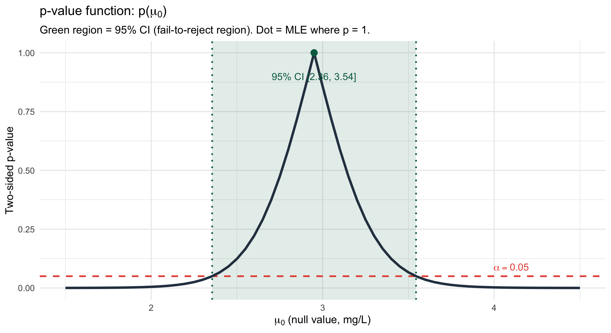

Adverse events in a clinical trial are monitored over successive reporting windows. The number of adverse events per window follows \(X_i \stackrel{iid}{\sim} \text{Poisson}(\lambda)\). A safety board tests:
for some constant \(c = (\ln k + 12)/\ln 2\). Since \(2^{\sum x_i}\) is strictly increasing in \(\sum x_i\), the inequality direction is preserved. \(\square\)
Part (b) — Critical value
# Under H0: sum(X_i) ~ Poisson(6 * 2) = Poisson(12)# Find smallest c such that P(Y >= c | Y ~ Pois(12)) <= 0.05c_vals <-12:25alpha_vals <-1-ppois(c_vals -1, lambda =12)tibble(c = c_vals, alpha =round(alpha_vals, 4)) |>filter(alpha <=0.06) |># show candidates near 0.05 knitr::kable()
The power of the NP test at \(\lambda = 4\) is \(1 - \beta^* = 0.8717\). By the NP Lemma, no other level-\(0.0374\) test can achieve higher power at \(\lambda = 4\).
Part (d) — UMP argument
For any fixed alternative \(\lambda_a > 2\), the NP likelihood ratio is:
Since \(\lambda_a > 2\), the base \(\lambda_a/2 > 1\), so \(\Lambda^* \geq k \iff \sum x_i \geq c(\lambda_a)\). But the constant \(c\) that controls the Type I error at level \(\alpha^*\) is determined solely by \(H_0\) (via the \(\text{Poisson}(12)\) null distribution) — it does not depend on which \(\lambda_a > 2\) we choose. Therefore the same rejection region \(\{\sum X_i \geq 19\}\) is most powerful against every \(\lambda_a > 2\), making it UMP for the composite alternative \(H_a: \lambda > 2\).
Problem 2: Likelihood Ratio Test and Wilks’ Theorem (Lesson 15)
cat("Conclusion at alpha=0.05:",ifelse(p_wilks <0.05, "Reject H0", "Fail to reject H0"), "\n")
Conclusion at alpha=0.05: Fail to reject H0
The Wilks p-value is 1 and the exact p-value is 0.1755. Both fail to reject \(H_0\) at $= 0.05`. The approximation is somewhat rough for \(n = 10\).
Part (d) — Degrees of freedom
The full parameter space \(\Omega\) has 1 free parameter (\(\lambda\)). The null \(\Omega_0 = \{3.5\}\) constrains \(\lambda\) to a single point, leaving 0 free parameters. Wilks’ theorem gives \(m = \dim(\Omega) - \dim(\Omega_0) = 1 - 0 = \mathbf{1}\) degree of freedom.
Problem 3: Statistical vs. Practical Significance (Lesson 16)
A large RCT (\(n = 3{,}200\) per arm) evaluates a new lipid-lowering drug. \(\bar{x}_{\text{control}} = 142.1\) mg/dL, \(\bar{x}_{\text{treat}} = 140.3\) mg/dL, \(\sigma = 28.15\) mg/dL (assumed known).
(a) z-statistic, p-value, and 95% CI. (b) Cohen’s \(d\) and clinical significance. (c) Conceptual explanation.
Cohen’s \(d = 0.064\) is classified as negligible. The entire 95% CI \((-3.18,\ -0.42)\) mg/dL lies far above the clinical threshold of \(-10\) mg/dL. Even the lower bound of the CI (\(-3.18\) mg/dL) falls well short of a meaningful reduction. There is no evidence of a clinically meaningful effect.
Part (c) — Conceptual
With \(n = 3{,}200\) per arm, even negligible differences produce tiny standard errors, making any non-zero effect statistically detectable. Statistical significance measures detectability given the sample size, not whether the effect is large enough to matter clinically. Reporting the CI rather than just the p-value reveals that the plausible effect range is 0.8–2.8 mg/dL — far below the 10 mg/dL threshold that justifies prescribing this drug.
Problem 4: CI-Test Duality — Theory and Computation (Lesson 16)
Using infection data from Problem 2: \(n = 10\), \(\sum x_i = 43\), \(\lambda_0 = 3.5\).
(a) State and apply the duality theorem. (b) Compute CI and check two null values. (c) One-sided lower bound.
Part (a) — Duality theorem
CI-Test Duality Theorem (Devore 9.6): Let \(C(\mathbf{X})\) be a \(100(1-\alpha)\%\) CI obtained by inverting a level-\(\alpha\) test. Then: \[\theta_0 \notin C(\mathbf{X}) \iff \text{reject } H_0: \theta = \theta_0 \text{ at level } \alpha\]\[\theta_0 \in C(\mathbf{X}) \iff \text{fail to reject } H_0: \theta = \theta_0 \text{ at level } \alpha\]
The Poisson CI is constructed precisely by inverting the exact Poisson test: it consists of all \(\lambda_0\) values for which the exact test fails to reject at level \(\alpha\). Therefore, by the theorem, \(\lambda_0 \in C\) if and only if the test of \(H_0: \lambda = \lambda_0\) fails to reject — the CI and the test are exactly dual.
The lower bound is \(\underline{\lambda} = 3.2812\). Since 3.2812 ≤ 3.5, we fail to reject \(H_0: \lambda \leq 3.5\) at the 5% level — the hospital’s rate is significantly above the benchmark.
Problem 5: Constructing CIs and the p-Value Function (Lesson 16)
\(\mu_0 = 3.0\) falls inside the 95% CI \([2.356, 3.544]\). By the CI-Test Duality Theorem, we therefore fail to reject\(H_0: \mu = 3.0\) at \(\alpha = 0.05\) — no test statistic needed.
Part (b) — 95% CI for \(\sigma^2\) and \(\sigma\)
Starting from \((n-1)S^2/\sigma^2 \sim \chi^2_{n-1}\), inverting the acceptance region gives:
cat("95% CI for sigma^2: [", round(ci_var_lo, 4), ",", round(ci_var_hi, 4), "]\n")
95% CI for sigma^2: [ 0.4393 , 2.5238 ]
cat("95% CI for sigma: [", round(sqrt(ci_var_lo), 4), ",",round(sqrt(ci_var_hi), 4), "]\n")
95% CI for sigma: [ 0.6628 , 1.5886 ]
Part (c) — p-value function
mu0_grid <-seq(1.5, 4.5, by =0.05)pval_fn <-map_dbl(mu0_grid, ~2*pt(-abs((xbar_d - .x) / se_d), df = df_d))ggplot(tibble(mu0 = mu0_grid, pval = pval_fn), aes(x = mu0, y = pval)) +annotate("rect", xmin = ci_lo_d, xmax = ci_hi_d, ymin =-Inf, ymax =Inf,fill ="#006a4e", alpha =0.12) +geom_vline(xintercept =c(ci_lo_d, ci_hi_d),color ="#006a4e", linewidth =1, linetype ="dotted") +geom_hline(yintercept =0.05, linetype ="dashed",color ="#e74c3c", linewidth =1) +geom_line(color ="#2c3e50", linewidth =1.5) +geom_point(aes(x = xbar_d, y =1), size =3.5, color ="#006a4e") +annotate("text", x = xbar_d, y =0.90,label =sprintf("95%% CI [%.2f, %.2f]", ci_lo_d, ci_hi_d),color ="#006a4e", size =4.5) +annotate("text", x =4.1, y =0.09,label =expression(alpha ==0.05), color ="#e74c3c", size =4.5) +labs(title =expression("p-value function: p("* mu[0] *")"),subtitle ="Green region = 95% CI (fail-to-reject region). Dot = MLE where p = 1.",x =expression(mu[0] *" (null value, mg/L)"),y ="Two-sided p-value")

The green shaded region where \(p(\mu_0) \geq 0.05\) spans exactly \([2.356, 3.544]\) mg/L, matching the 95% t-CI from part (a) precisely — confirming the CI-test duality theorem visually.
Problem 6: Bootstrap Hypothesis Testing (Lesson 17)
The distribution is right-skewed with values up to 92.5 ng/mL. With \(n = 18\) and noticeable skewness, the normality assumption is questionable — a bootstrap test is more appropriate. The t-test fails to reject \(H_0\) (\(p = 0.1608\)).
cat("Decision:", ifelse(p_boot_f <0.05, "Reject H0", "Fail to reject H0"), "\n")
Decision: Fail to reject H0
Both methods fail to reject \(H_0\). The p-values are close (\(0.175\) vs \(0.1608\)), consistent with Lesson 17’s simulation showing that t-test and bootstrap converge as \(n\) increases toward 30.
The naive approach is invalid because resampling from the original data produces a distribution centered at \(\bar{x} = 47.7\) ng/mL rather than at the null value \(\mu_0 = 40\) ng/mL. A valid null distribution must represent how the test statistic behaves when \(H_0\) is true; the naive distribution instead approximates sampling variability of \(\hat\mu\) around the unknown true mean. Comparing \(|\bar{x}^{*b} - \bar{x}|\) to \(|\bar{x} - \mu_0|\) measures something conceptually different from what the test requires.
The left panel shows the naive distribution centered at \(\bar{x}\) (not the null value), making it an invalid null reference distribution. The right panel shows the correct bootstrap null distribution centered at \(\mu_0\), with the observed statistic and p-value region clearly marked.